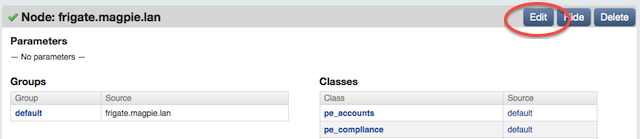
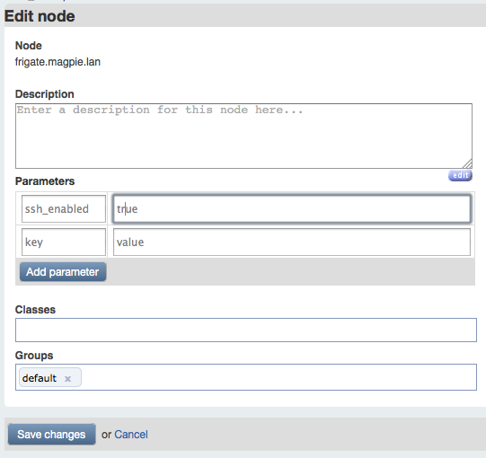
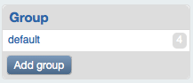
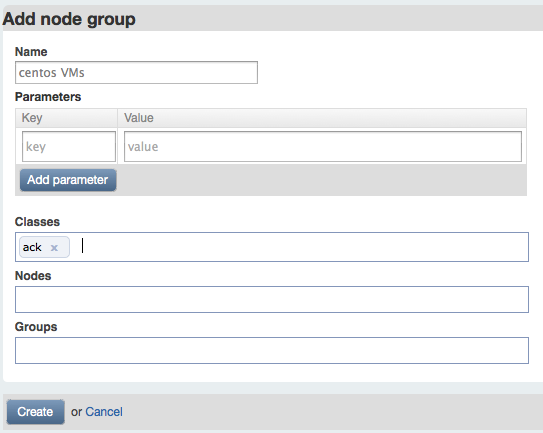
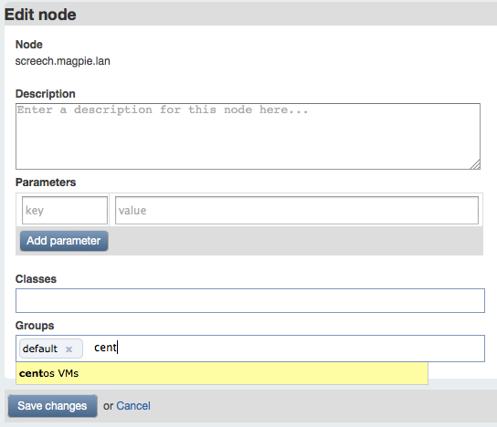

Grouping and Classifying Nodes
Groups, classes, and parameters are used to control which Puppet configurations your nodes receive.
NOTE To use the console to control node configuration, you must be logged in as a read-write or admin level user. Read-only users can only view node configuration data, they cannot modify it.
Parameters
Parameters are simple: they’re top-scope variables that your Puppet manifests can use. Use them to configure the behavior of classes.
Add parameters by clicking the edit button in a node view (or group view) and typing a key and value under the “parameters” heading. Use the “add parameter” button below to make additional key/value fields. Be sure to save your changes when done.


Parameters can only be strings, not arrays or hashes.
Classes
The classes the console knows about are a subset of the classes in your puppet master’s collection of modules. You must add classes to the console manually if you want to assign them to any nodes or groups.
See the Puppet section of this user’s guide for an introduction to Puppet classes.
Adding a New Class
Use the “Add class” button in the console’s sidebar, then type the new class’s name in the text field and click “create.”


In this case, we’re adding a tiny class that makes sure ack is present in /usr/local/bin.
When adding a class, you must use its fully qualified name. (base::centos, for example.)
Assigning a Class to a Node
Assign classes by clicking the edit button in a node view (or group view). Start typing the class’s name in the “classes” field, then choose the class you want from the auto-completion list. Be sure to save your changes when done.

Writing Classes for the Console
Defining wrapper classes in a “site” module can help you use the console more effectively, and may be mandatory if you use parameterized classes heavily.
Most Puppet modules are written so each class manages a logical chunk of configuration. This means any node’s configuration could be composed of dozens of Puppet classes. Although you can add these dozens of classes to the console, it’s often better to create a module called site and populate it with super-classes, which declare all of the smaller classes a given type of machine will need.
There are many ways to compose these classes; which one you choose depends on how your own collection of modules works. Some possibilities:
- Create many non-overlapping classes, such that any node will only have one class assigned to it.
- Create several separated “levels” of classes — a “base” layer, a layer for role-specific packages and services, a layer for application data, etc. This way, each node can get the base class for its own OS or machine type, but use the same application classes as some other quite different node.
Wrapper classes are also necessary for working with parameterized classes — you can declare parameters in nodes and groups, then have your wrapper classes pass them through when they declare each smaller class.
Grouping Nodes
Groups let you assign a class or parameter to many nodes at once. This saves you time and makes the structure of your site more knowable.
Nodes can belong to many groups, and inherit classes and parameters from all of them. Groups can also contain other groups, which will inherit information the same way nodes do.
Adding a New Group
Use the “add group” button in the console’s sidebar, then enter the group’s name and any classes or parameters you want to assign.


Adding Nodes to a Group
You can change the membership of a group from both node views and group views. Click the edit button and use the “groups” or “nodes” fields, as needed. These fields will offer auto-completions the same way the classes field does.


Assigning Classes and Parameters to a Group
This works identically to assigning classes and parameters to a single node. Use the edit button and the classes or key/value fields.
The Default Group
The console automatically adds every node to a group called default. Use this group for any classes you need assigned to every single node.
Nodes are added to the default group by a periodic background task, so it may take several minutes after a node first checks in before it joins the group.
Rake API
The console provides rake tasks that can group nodes, create classes, and assign classes to groups. You can use these tasks as an API to automate workflows or bypass the console’s GUI when performing large tasks.
All of these tasks should be run as follows, replacing <TASK> with the task name and any arguments it requires:
$ sudo /opt/puppet/bin/rake -f /opt/puppet/share/puppet-dashboard/Rakefile <TASK>
Node Tasks
node:list [match=<REGULAR EXPRESSION>]- List nodes. Can optionally match nodes by regex.
node:add name=<NAME> [groups=<GROUPS>] [classes=<CLASSES>]- Add a new node. Classes and groups can be specified as comma-separated lists.
node:del name=<NAME>- Delete a node.
node:classes name=<NAME> classes=<CLASSES>- Replace the list of classes assigned to a node. Classes must be specified as a comma-separated list.
node:groups name=<NAME> groups=<GROUPS>- Replace the list of groups a node belongs to. Groups must be specified as a comma-separated list.
Class Tasks
nodeclass:list [match=<REGULAR EXPRESSION>]- List node classes. Can optionally match classes by regex.
nodeclass:add name=<NAME>- Add a new class. This must be a class available to the Puppet autoloader via a module.
nodeclass:del name=<NAME>- Delete a node class.
Group Tasks
nodegroup:list [match=<REGULAR EXPRESSION>]- List node groups. Can optionally match groups by regex.
nodegroup:add name=<NAME> [classes=<CLASSES>]- Create a new node group. Classes can be specified as a comma-separated list.
nodegroup:del name=<NAME>- Delete a node group.
nodegroup:add_all_nodes name=<NAME>- Add every known node to a group.
nodegroup:addclass name=<NAME> class=<CLASS>- Assign a class to a group without overwriting its existing classes.
nodegroup:edit name=<NAME> classes=<CLASSES>- Replace the classes assigned to a node group. Classes must be specified as a comma-separated list.